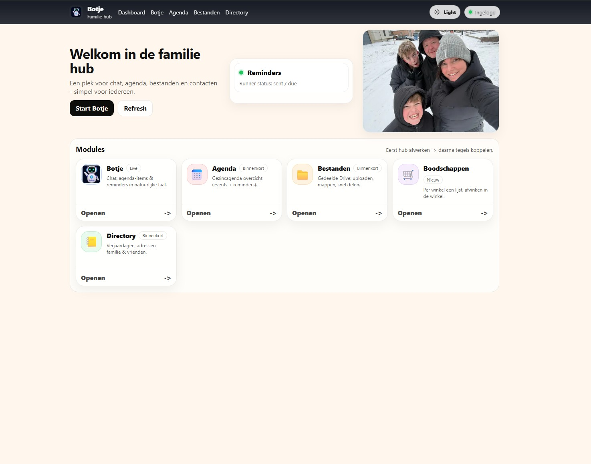
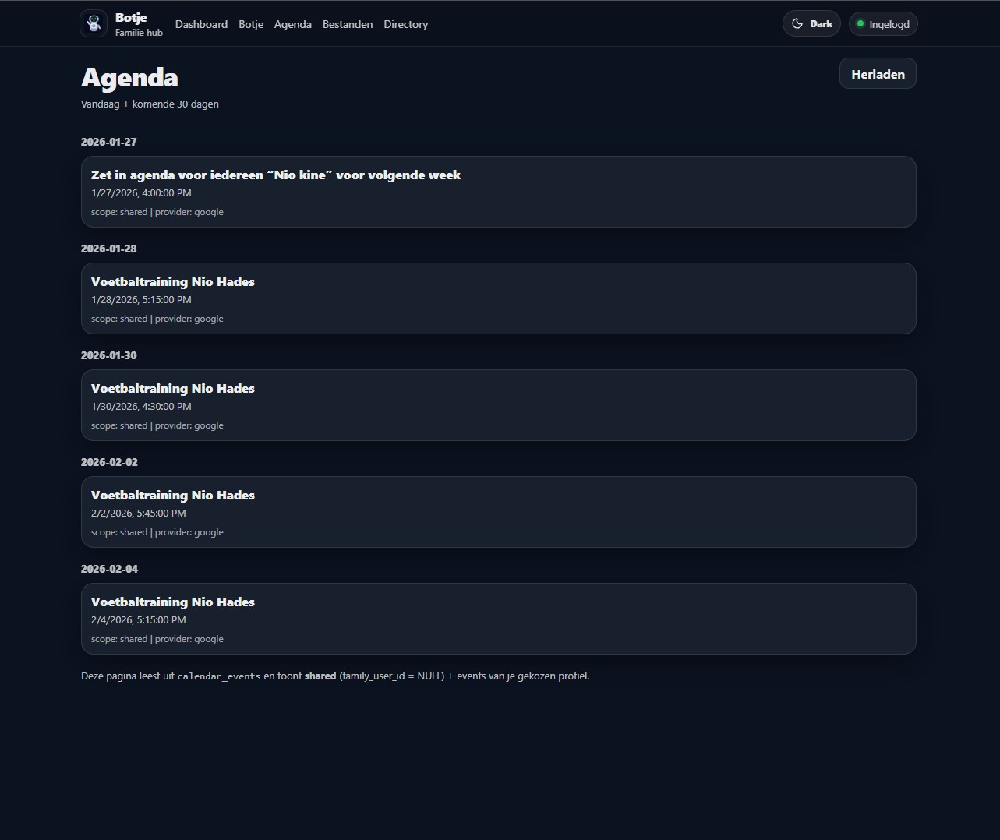
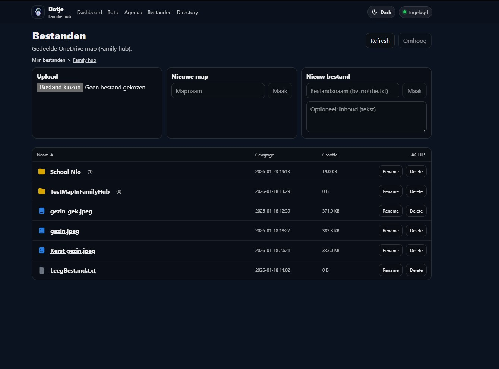
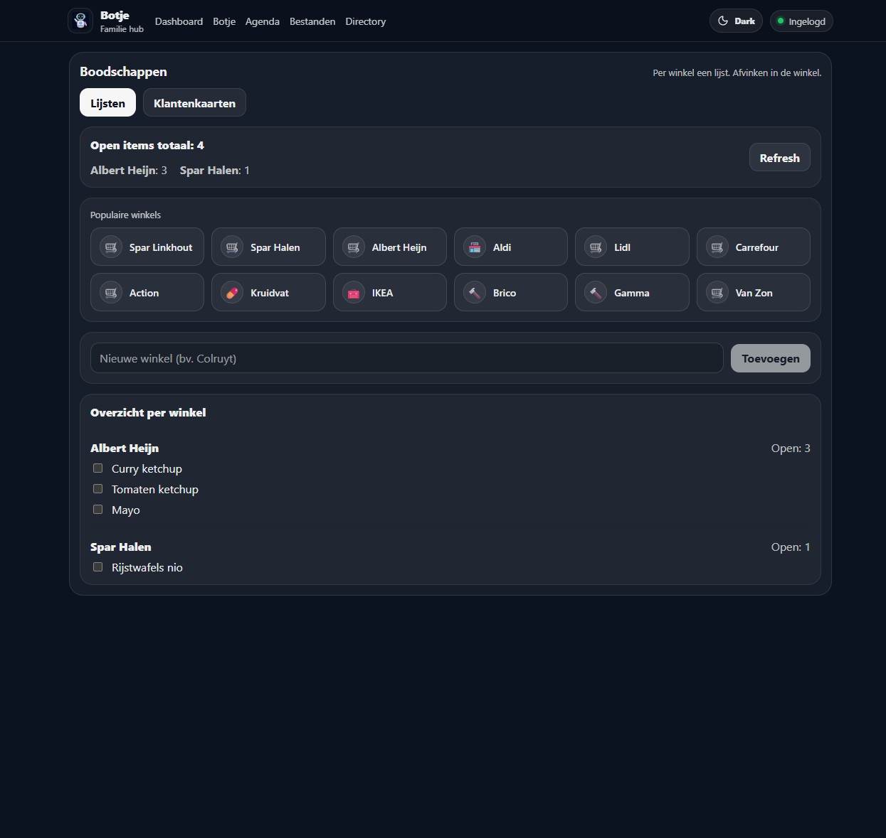
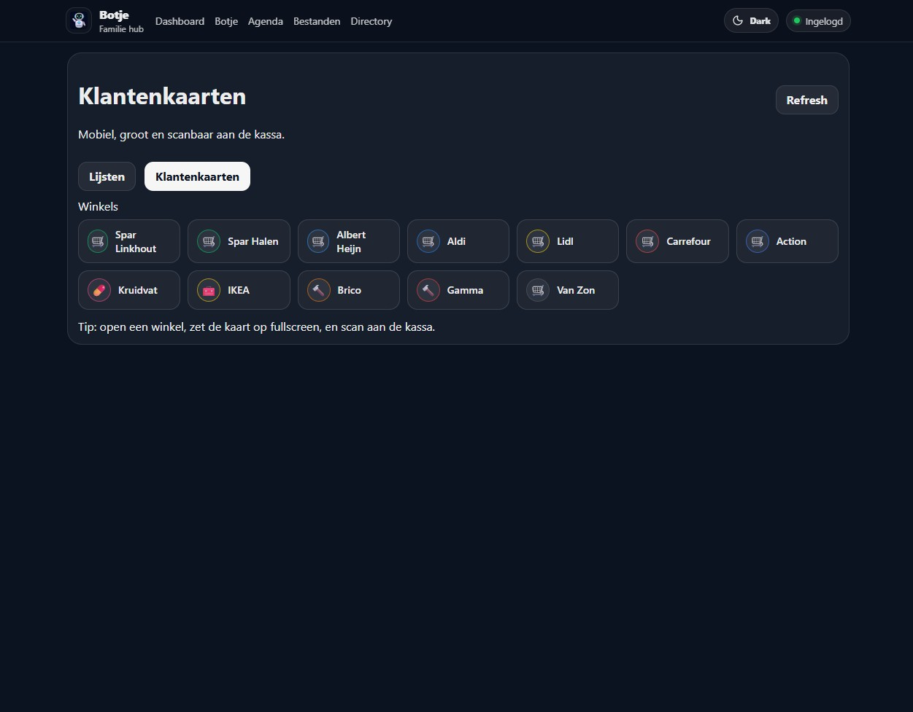
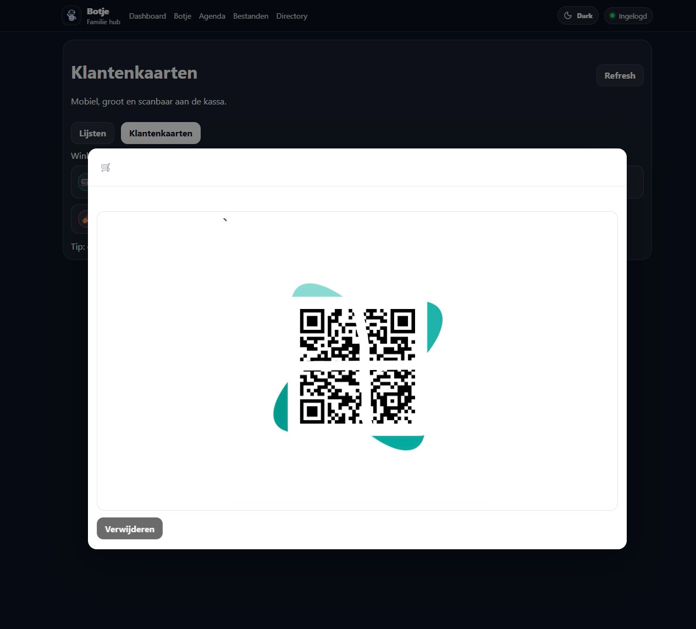
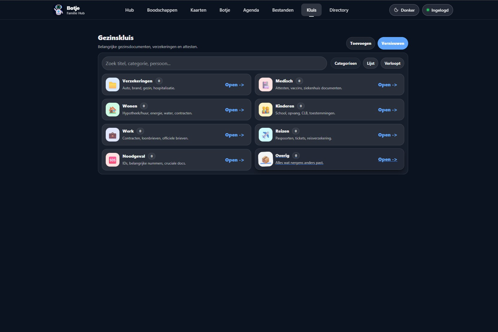
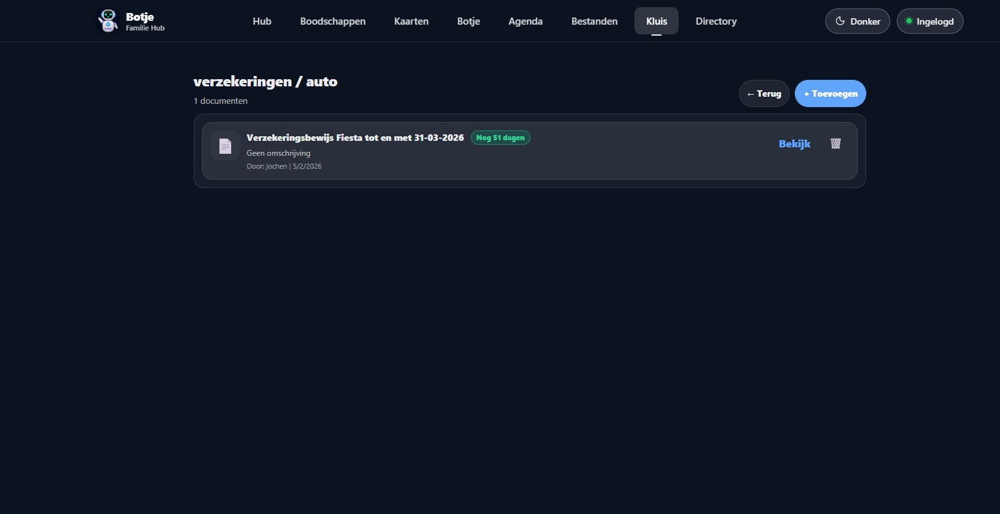
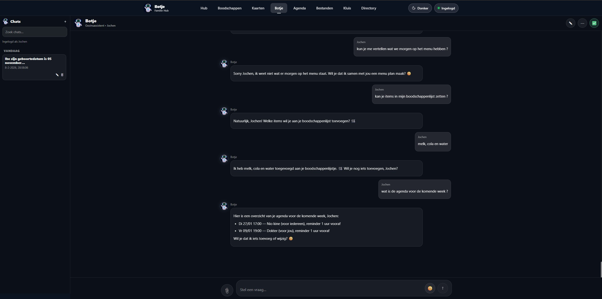
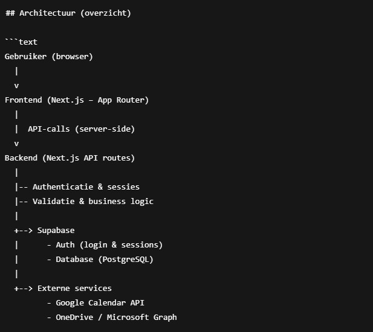

Project · Webapplicatie · Gebouwd met AI-tools
BotjeFamily Hub
Een eigen webapplicatie voor gezinsplanning en automatisatie, met aandacht voor betrouwbaarheid, veilige configuratie en integraties met externe diensten.
Context
Context en doel
- Gezinsgerichte planning: het family hub-concept
- Meerdere gebruikers en contexten
- Automatisatie van terugkerende taken
- Integratie met externe API's, zoals Google Calendar
Doel
Een stabiele en onderhoudbare webapplicatie die een realistische productieomgeving nabootst, met planning, meldingen en synchronisatie centraal.
Aanpak
Security en betrouwbaarheid
Stabiliteit en voorspelbaarheid boven snelle workarounds.
- Secrets en credentials nooit in frontend-code
- Bewuste keuzes rond permissions en API-scopes
- Correct omgaan met de beperkingen van service accounts
- Environment variables via .env.local en cloudinstellingen
- Duidelijke scheiding tussen test en productie
- Opgelost: ontbrekende of foute environment variables
- Opgelost: Google Calendar-permissies en attendees
- Opgelost: Next.js-routing en duplicaten
- Geleerd: reproduceerbare fixes en versiebeheer

Opbouw
Wat ik heb gebouwd
Applicatiestructuur
- Next.js met App Router
- Scheiding via route groups
- Herbruikbare componenten
- Ontworpen voor niet-technische gebruikers
Data en authenticatie
- Supabase als database en login
- Structuur per gezin en context
- Server-side validatie
Gezinsagenda
- Google Calendar API via service accounts
- Gedeelde en persoonlijke events
- Synchronisatie met foutafhandeling
Boodschappen en klantenkaarten
- Lijsten per winkel
- Mobile-first in de winkel
- QR-codes fullscreen scanbaar aan de kassa
Gezinskluis en verzekeringen
- Veilige opslag van gevoelige documenten
- Toegangscontrole per gebruiker
- Herinneringen bij vervaldata
Botje, de assistent
- Acties starten in gewone taal
- AI-assistent voor dagelijkse taken
- Server-side validatie en guardrails
Beelden
Uit de praktijk
Klik op een beeld om het groot te bekijken.









Resultaat
Wat dit project aantoont
Moderne webontwikkeling
Integraties in een realistische context
Security-bewust werken
Problemen oplossen die niet triviaal zijn
Complexe apps bouwen met AI-hulp
Verder kijken
Meer over mijn loopbaan en projecten
Op mijn cv-site staan mijn ervaring, mijn eigen software en het volledige cv als pdf.